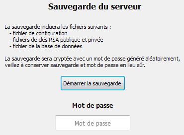

Documentation client
Administration : sauvegarde
La sauvegarde du serveur permet de copier dans un format crypté les fichiers suivants :
- Fichier de configuration
- Fichier de clé privée RSA
- Fichier de clé publique RSA
- Fichier de la base de données
Le fichier résultant sera crypté avec un mot de passe généré aléatoirement et affiché à l'administrateur dans un champ de texte.
